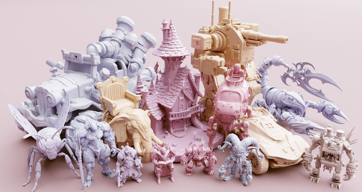
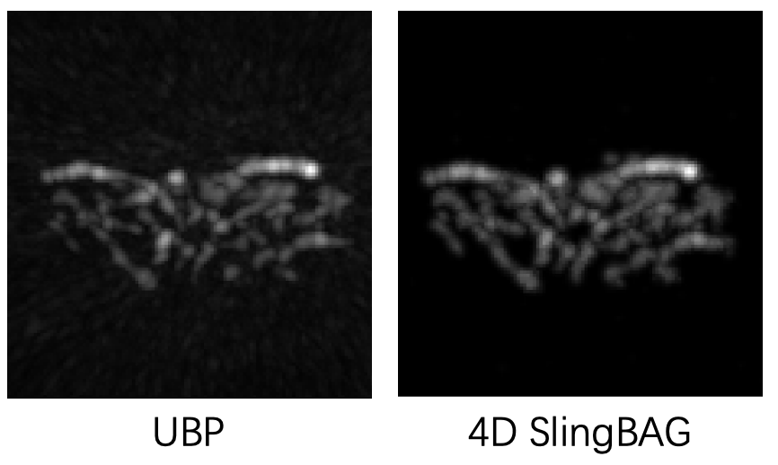
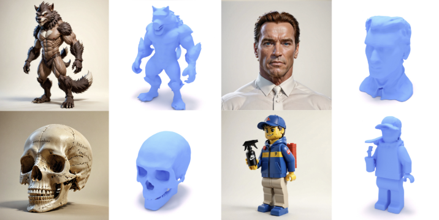
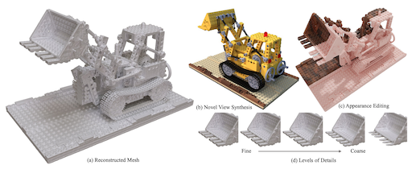

Also find my full publication list at Google Scholar.
Preprint

arXiv preprint 2601.20540

Denoise to Track: Harnessing Video Diffusion Priors for Robust Correspondence
[paper]
Tianyu Yuan, Yuanbo Yang, Lin-Zhuo Chen, Yao Yao†, Zhuzhong Qian†
arXiv preprint 2512.04619

Computer Vision and Pattern Recognition (CVPR) 2026
Jiahao Wang*, Yufeng Yuan*, Rujie Zheng*, Youtian Lin, Jian Gao, Lin-Zhuo Chen, Yajie Bao, Yi Zhang, Chang Zeng, Yanxi Zhou, Xiaoxiao Long, Hao Zhu, Zhaoxiang Zhang, Xun Cao, Yao Yao*
Computer Vision and Pattern Recognition (CVPR) 2026

Computer Vision and Pattern Recognition (CVPR) 2026

Pressure2Motion: Hierarchical Human Motion Reconstruction from Ground Pressure with Text Guidance
[paper]
Zhengxuan Li, Qinhui Yang, Yiyu Zhuang, Chuan Guo, Xinxin Zuo, Xiaoxiao Long, Yao Yao, Xun Cao, Qiu Shen, Hao Zhu
Computer Vision and Pattern Recognition (CVPR) 2026

International Conference on Learning Representations (ICLR) 2026

Anime-Ready: Controllable 3D Anime Character Generation with Body-Aligned Component-Wise Garment Modeling
[paper]
Jiachen Qian, Hongye Yang, Youtian Lin, Tianhao Zhao, Hengshuang Zhao, Yao Yao, Feihu Zhang
International Conference on Learning Representations (ICLR) 2026
SlingBAG: point cloud-based iterative algorithm for large-scale 3D photoacoustic imaging
[paper]
Shuang Li*, Yibing Wang*, Jian Gao*, Chulhong Kim, Seongwook Choi, Yu Zhang, Qian Chen, Yao Yao*, Changhui Li*
Nature Communications 2025

Direct3D‑S2: Gigascale 3D Generation Made Easy with Spatial Sparse Attention
[paper]
[project]
[code]
[demo]
Shuang Wu*, Youtian Lin*, Feihu Zhang, Yifei Zeng, Yikang Yang, Yajie Bao, Jiachen Qian, Siyu Zhu, Philip Torr, Xun Cao, Yao Yao*
Conference on Neural Information Processing Systems (NeurIPS) 2025
Yuanxun Lu*, Jingyang Zhang*, Tian Fang, Jean-Daniel Nahmias, Yanghai Tsin, Long Quan, Xun Cao, Yao Yao*, Shiwei Li
Computer Vision and Pattern Recognition (CVPR) 2025 (Highlight)
Xiangjun Gao*, Xiaoyu Li*, Yiyu Zhuang, Qi Zhang, Wenbo Hu, Chaopeng Zhang*, Yao Yao*, Ying Shan, Long Quan
Computer Vision and Pattern Recognition (CVPR) 2025
Jiawei Zhang, Zijian Wu, Zhiyang Liang, Yicheng Gong, Dongfang Hu, Yao Yao, Xun Cao, Hao Zhu*
Computer Vision and Pattern Recognition (CVPR) 2025
Flow Distillation Sampling: Regularizing 3D Gaussians with Pre-trained Matching Priors
[paper]
[project]
Lin-Zhuo Chen*, Kangjie Liu*, Youtian Lin, Zhihao Li, Siyu Zhu, Xun Cao, Yao Yao*
International Conference on Learning Representations (ICLR) 2025
Jiahao Cui, Hui Li, Yao Yao, Hao Zhu, Hanlin Shang, Kaihui Cheng, Hang Zhou, Siyu Zhu*, Jingdong Wang
International Conference on Learning Representations (ICLR) 2025
4D Diffusion for Dynamic Protein Structure Prediction with Reference Guided Motion Alignment
[paper]
Kaihui Cheng*, Ce Liu*, Qingkun Su, Jun Wang, Liwei Zhang, Yining Tang, Yao Yao, Siyu Zhu*, Yuan Qi*
AAAI Conference on Artificial Intelligence (AAAI) 2025

4D SlingBAG: Spatial-temporal Coupled Gaussian Ball for Large-scale Dynamic 3D Photoacoustic Iterative Reconstruction
[paper]
Shuang Li*, Yibing Wang*, Jian Gao*, Chulhong Kim, Seongwook Choi, Yu Zhang, Qian Chen, Yao Yao*, Changhui Li*
arXiv preprint 2412.03898
Advances in Differentiable Rendering Based on Three-Dimensional Gaussian Splatting (Invited)
[paper]
Jian Gao, Linzhuo Chen, Qiu Shen, Xun Cao, Yao Yao
Laser & Optoelectronics Progress, 2024, 61(16): 1611010

Shuang Wu*, Youtian Lin*, Feihu Zhang, Yifei Zeng, Jingxi Xu, Philip Torr, Xun Cao, Yao Yao*
Conference on Neural Information Processing Systems (NeurIPS) 2024
Relightable 3D Gaussian: Real-time Point Cloud Relighting with BRDF Decomposition and Ray Tracing
[paper]
[project]
Jian Gao*, Chun Gu*, Youtian Lin, Hao Zhu, Xun Cao, Li Zhang*, Yao Yao*
European Conference on Computer Vision (ECCV) 2024
Yifei Zeng*, Yanqin Jiang*, Siyu Zhu, Yuanxun Lu, Youtian Lin, Hao Zhu, Weiming Hu, Xun Cao, Yao Yao*
European Conference on Computer Vision (ECCV) 2024
Champ: Controllable and Consistent Human Image Animation with 3D Parametric Guidance
[paper]
[project]
Shenhao Zhu*, Junming Leo Chen*, Zuozhuo Dai, Yinghui Xu, Xun Cao, Yao Yao, Hao Zhu*, Siyu Zhu*
European Conference on Computer Vision (ECCV) 2024
Qianyun He, Xinya Ji, Yicheng Gong, Yuanxun Lu, Zhengyu Diao, Linjia Huang, Yao Yao, Siyu Zhu, Zhan Ma, Songcen Xu, Xiaofei Wu, Zixiao Zhang, Xun Cao, Hao Zhu*
European Conference on Computer Vision (ECCV) 2024
Yuxiao He, Yiyu Zhuang, Yanwen Wang, Yao Yao, Siyu Zhu, Xiaoyu Li, Qi Zhang, Xun Cao, Hao Zhu*
European Conference on Computer Vision (ECCV) 2024
Mingwang Xu*, Hui Li*, Qingkun Su*, Hanlin Shang, Liwei Zhang, Ce Liu, Jingdong Wang, Yao Yao, Siyu Zhu*
arXiv preprint 2406.08801
Stereo Risk: A Continuous Modeling Approach to Stereo Matching
[paper]
Ce Liu*, Suryansh Kumar*, Shuhang Gu, Radu Timofte, Yao Yao*, Luc Van Gool
International Conference on Machine Learning (ICML) 2024 (Oral)
Kai Cheng*, Xiaoxiao Long*, Kaizhi Yang, Yao Yao, Wei Yin, Yuexin Ma, Wenping Wang, Xuejin Chen*
International Conference on Machine Learning (ICML) 2024
Youtian Lin, Zuozhuo Dai, Siyu Zhu, Yao Yao*
Computer Vision and Pattern Recognition (CVPR) 2024 (Highlight)
Yuanxun Lu, Jingyang Zhang, Shiwei Li, Tian Fang, David McKinnon, Yanghai Tsin, Long Quan, Xun Cao, Yao Yao*
Computer Vision and Pattern Recognition (CVPR) 2024
Yanqin Jiang, Li Zhang, Jin Gao, Weiming Hu, Yao Yao*
International Conference on Learning Representations (ICLR) 2024
Jingyang Zhang, Shiwei Li, Yuanxun Lu, Tian Fang, David McKinnon, Yanghai Tsin, Long Quan, Yao Yao*
International Conference on Learning Representations (ICLR) 2024
Jingyang Zhang, Yao Yao*, Shiwei Li, Jingbo Liu, Tian Fang, David McKinnon, Yanghai Tsin, Long Quan
International Conference on Computer Vision (ICCV) 2023

Yiyu Zhuang, Qi Zhang, Ying Feng, Hao Zhu, Yao Yao, Xiaoyu Li, Yan-Pei Cao, Ying Shan, Xun Cao
Siggraph Asia 2023
Zuozhuo Dai, Zhenghao Zhang, Yao Yao, Bingxue Qiu, Siyu Zhu, Long Qin, Weizhi Wang
arXiv 2311.12886
Yifei Zeng, Yuanxun Lu, Xinya Ji, Yao Yao, Hao Zhu*, Xun Cao
arXiv 2306.09864
Yao Yao, Jingyang Zhang, Jingbo Liu, Yihang Qu, Tian Fang, David McKinnon, Yanghai Tsin, Long Quan
European Conference on Computer Vision (ECCV) 2022
Jingyang Zhang, Shiwei Li, Zixin Luo, Tian Fang, Yao Yao*
International Journal of Computer Vision (IJCV) 2022 (Invited)
Critical Regularizations for Neural Surface Reconstruction in the Wild
[paper]
Jingyang Zhang, Yao Yao*, Shiwei Li, Tian Fang, David McKinnon, Yanghai Tsin, Long Quan
Computer Vision and Pattern Recognition (CVPR) 2022
Jingyang Zhang, Yao Yao*, Long Quan
International Conference on Computer Vision (ICCV) 2021 (Oral)
Jingyang Zhang, Yao Yao*, Shiwei Li, Zixin Luo, Tian Fang
British Machine Vision Conference (BMVC) 2020 (Oral)
Jingyang Zhang, Yao Yao*, Zixin Luo, Shiwei Li, Tianwei Shen, Tian Fang, Long Quan
International Conference on Pattern Recognition (ICPR) 2020 (Best Student Paper Award)
Yao Yao, Zixin Luo, Shiwei Li, Jingyang Zhang, Yufan Ren, Lei Zhou, Tian Fang, Long Quan
Computer Vision and Pattern Recognition (CVPR) 2020
Zixin Luo, Lei Zhou, Xuyang Bai, Hongkai Chen, Jiahui Zhang, Yao Yao, Shiwei Li, Tian Fang, Long Quan
Computer Vision and Pattern Recognition (CVPR) 2020
Lei Zhou, Zixin Luo, Tianwei Shen, Jiahui Zhang, Mingmin Zhen, Yao Yao, Tian Fang, Long Quan
Computer Vision and Pattern Recognition (CVPR) 2020 (Oral)
Tianwei Shen, Lei Zhou, Zixin Luo, Yao Yao, Shiwei Li, Jiahui Zhang, Tian Fang, Long Quan
International Conference on Computer Vision Workshops (ICCVW) 2019
Yao Yao, Zixin Luo, Shiwei Li, Tianwei Shen, Tian Fang, Long Quan
Computer Vision and Pattern Recognition (CVPR) 2019
Cross-atlas Convolution for Parameterization Invariant Learning on Textured Mesh Surface
[paper]
Shiwei Li, Zixin Luo, Mingmin Zhen, Yao Yao, Tianwei Shen, Tian Fang, Long Quan
Computer Vision and Pattern Recognition (CVPR) 2019
Zixin Luo, Tianwei Shen, Lei Zhou, Jiahui Zhang, Yao Yao, Shiwei Li, Tian Fang, Long Quan
Computer Vision and Pattern Recognition (CVPR) 2019 (Oral)
Yao Yao, Zixin Luo, Shiwei Li, Tian Fang, Long Quan
European Conference on Computer Vision (ECCV) 2018 (Oral)
Zixin Luo, Tianwei Shen, Lei Zhou, Siyu Zhu, Runze Zhang, Yao Yao, Tian Fang, Long Quan
European Conference on Computer Vision (ECCV) 2018
Shiwei Li, Yao Yao, Tian Fang, Long Quan
Computer Vision and Pattern Recognition (CVPR) 2018
Reletive Camera Refinement for Accurate Dense Reconstruction
[paper]
Yao Yao, Shiwei Li, Siyu Zhu, Hanyu Deng, Tian Fang, Long Quan
International Conference on 3D Vision (3DV) 2017 (Spotlight Oral)
Revised depth map estimation for multi-view stereo
[paper]
Yao Yao, Hao Zhu, Yongming Nie, Xiaoli Ji, Xun Cao
International Conference on 3D Imaging (IC3D) 2014 (Oral)